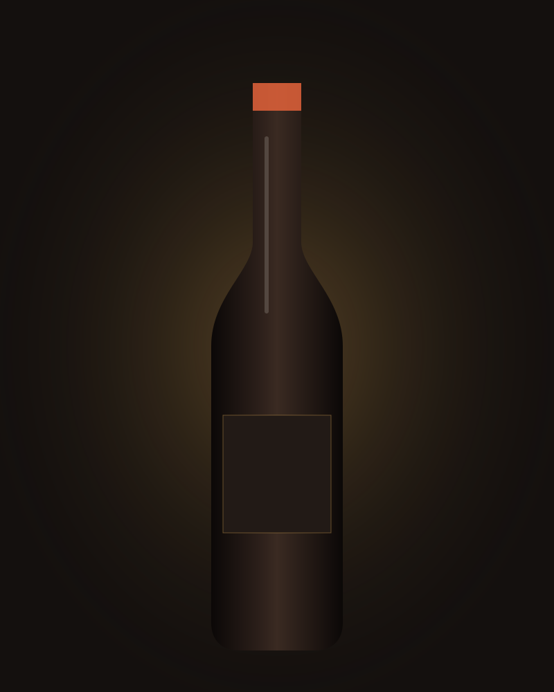

Assaggi dove il vino nasce.
Degustazioni nella cantina di famiglia, a Solicchiata.
Cantina di famiglia a Solicchiata, a circa 700 metri sul vulcano. Prenoti direttamente con noi.
Prenota la tua esperienzaScendiamo dal vulcano. Arriviamo ai filari. Qui la terra è nera, di origine vulcanica [DA CONFERMARE terminologia]. Le vigne stanno a circa 700 metri, sul versante nord-est dell'Etna.
Gina e Francesco Russo lavorano con il padre Vincenzo. In vigna usano trattamenti biologici [DA CONFERMARE dicitura]. Qui l'imbottigliamento è iniziato nel 1955. Conosci la nostra storia: [DA CONFERMARE pagina /storia].

Degustazioni nella cantina di famiglia, a Solicchiata.
A farvi assaggiare i vini è la famiglia Russo.
Dalla degustazione semplice alla selezione di annate vecchie.
Dalla degustazione semplice di vini dell'Etna DOC alla selezione di annate vecchie con la famiglia. Gruppi fino a [35] persone [DA CONFERMARE].
Vini dell'Etna DOC in sala degustazione. Per iniziare.
45 min [DA CONFERMARE] · da [25] € a persona [DA CONFERMARE]Degustazione con pane cunzatu fatto in casa e due oli [DA CONFERMARE ingredienti e oli].
1 ora [DA CONFERMARE] · da [33] € a persona [DA CONFERMARE]Degustazione, merenda e giro in vigna.
2 ore [DA CONFERMARE] · da [43] € a persona [DA CONFERMARE]Annate vecchie, selezione privata. Per chi vuole capire davvero i nostri vini.
3 ore [DA CONFERMARE] · da [87] € a persona [DA CONFERMARE]Una coperta, un cesto e i nostri vini in mezzo alla vigna. Due ore senza fretta, per piccoli gruppi. Da [60] € a persona, massimo [15] persone [DA CONFERMARE tutto].
Ti aspettiamo a Solicchiata, a circa 700 metri sull'Etna. Vieni a trovarci, la famiglia Russo ti versa il vino.
Famiglia Russo · quarta generazioneScegli l'esperienza, la data e quante persone siete. Ti rispondiamo noi, in italiano o in inglese [DA CONFERMARE lingue].